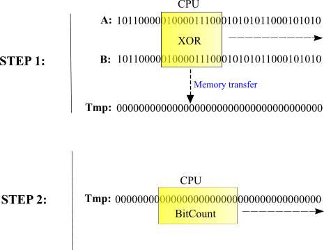
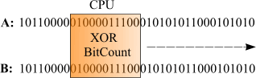
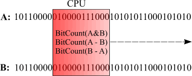

Efficient binary distance metrics
Anatoliy Kuznetsov. 2003.
Introduction
Bit vectors that characterize objects can be used to calculate "distances". This distances used to determine similarity or dissimilarity between two objects. Distance metrics can be used to cluster objects into groups with similar properties and then improve performance and quality of retrieval system. One of the well known distance measures is Hamming distance, which is the minimum number of bits that must be changed in order to convert one bit string into another.
This can be found by using XOR on corresponding bits or equivalently, by adding corresponding bits (base 2) without a carry. For example, in the two bit strings that follow:
A 0 1 0 0
B 1 1 0 1
A XOR B = 1 0 0 1
The Hamming distance between A and B is 2, the number of 1's in the XOR string. This is a dissimilarity measure since bigger value shows disagreement in bit strings.
Another distance measure is an Inner product of two bit strings. Inner product shows number of 1 bits similar in both vectors.
A 0 1 0 0
B 1 1 0 1
A AND B = 0 1 0 0
Inner product here is 1.
Implementation. First attempt.
BM library (actually almost any bitset library) implements AND, OR, XOR, DIFF operations and of course can count bitset population (number of ON bits). This works as basic building blocks for distance measures.
Hamming distance function can be programmed as:
unsigned int hamming_distance(const bvector<>& a, const bvector<>& b)
{
return (a ^ b).count();
}
Inner product:
unsigned int inner_product(const bvector<>& a, const bvector<>& b)
{
return (a & b).count();
}
This is ok implementation. Since bit operations is among the fastest it delivers good performance and well, it's one line of code. More complex similarity metrics like Tanamoto, Dice, Cosine function (and there are many others) all fall into the category which can be described in terms of logical operations and bit counting.
How it works? Performance analysis.

Fig. 1. Hamming distance implementation.
In this case C++ compiler creates a temporary bitset, performs massive XOR operation on two input argument vectors, and then computes number of ON bits. (In case of BM library the process is a bit complex, but the nature of it remains the same). Creation of temporaries is a "favorite in-house sport" of C++ compilers. And this temporary can cost us a lot of performance, since it requires costly heap memory allocation, memory copy and immediate memory deallocation. In case we compute distances between hundreds of thousands of bit-vectors it's all going to cost us an arm and a leg.
Memory Hierarchy Components.
Registers: On chip circuitry used to hold operands and results of functional unit calculations
Primary Data Cache: Small (on-chip) cache used to hold data about to be operated on by the chip
Secondary Data Cache: Larger (off-chip) cache used to hold data and instructions retrieved from
local memory
Local Memory: Random Access Memory
KEY FACT: As move down the hierarchy, time to retrieve data increases by roughly an order of magnitude for each step.
In our case CPU works as a sliding window, loading data from the memory into the CPU Caches, and registers and then processing it. So if bit strings are long enough and not fitting into the cache our performance will be memory bandwidth limited.
There is a severe performance gap caused by high processor clock rates and slow RAM access. Even with an aggressive, next-generation memory system using two or four memory channels and integrated one-megabyte level-two cache, a processor still spends over half of its time stalling for L2 misses.
Since bit operations and bit counting are both very fast, the optimization objective should be minimization of the memory traffic and cache misses.

Fig. 2. Optimized Hamming distance implementation.
By combining XOR operation and bit counting together we improve CPU cache (and registers reuse), remove the unneeded temporary, improve the CPU-memory ratio and get much better performance.
How much better?
A simple test routine (part of BM library performance test) shows that on Pentium 4 2.4 GHz
paired with single channel DDR333 memory we can expect 3-5 times better performance on
Hamming distance test. Different numbers shows that effect of cache optimization
depends on bit vector internal structure. GAP coding not only making bitsets use less memory, but
also makes job distance arithmetic works faster (because of the reduction in memory traffic).
... XOR COUNT bvector test with TEMP vector. BM. ; 25922;25.922 XOR COUNT bvector test with TEMP vector. STL. ; 30875;30.875 XOR COUNT bvector test. BM. ; 6516;6.516 One optimized vector XOR COUNT bvector test with TEMP vector. BM. ; 24390;24.39 XOR COUNT bvector test. BM. ; 9860;9.86 Both vectors optimized XOR COUNT bvector test with TEMP vector. BM. ; 22734;22.734 XOR COUNT bvector test. BM. ; 5141;5.141 ...
Numbers may vary, depending on CPU and memory subsystem performance, compiler settings, etc but the overall results are very promising.
BM library does not keep bit vectors as one continuous block of memory but rather splits it into more manageable chunks. This design makes cache aware algorithms much easier to implement. Typically CPU provides two level of cache hierarchy (sometimes three). The most precious is first level cache. BM library is trying to be platform independent and does not expect any specific CPU cache values. bvector template internally uses block sizes less or equal to 8KB. The worst case scenario is that we receive two 8KB blocks for processing. Intel Pentium 4 has only 8K of high performance L1 cache, so in this case both blocks will be processed out of the L2 cache. AMD Athlon and Opteron both have 64K of L1 data cache, so there is a good chance that our data window will be loaded into L1. Right now I have no manageable experiment data to check what architecture delivers better performance. Experiments with low end 1Ghz AMD Duron coupled with slow memory processor showed that cache aware algorithm worked 5-8 times better than the algorithm with temporary variable. (If somebody has an AMD Athlon 64 or Opteron, please contact me to stage an experiment).
BM library offers full set of operations combined with bit counters (bmalgo.h includes count_and, count_or, count_xor and count_sub functions).
More complex distance metrics
As an example lets take Tversky Index, which is:
TI = BITCOUNT(A & B) / [a*(BITCOUNT(A-B) + b*BITCOUNT(B-A) + BITCOUNT(A & B)]
Formula includes three operations: BITCOUNT_AND(A, B), BITCOUNT_SUB(A, B) and BITCOUNT_SUB(B, A). All three can be combined into one pipeline so it uses common window on both input vectors to perform all operations. This technique result in adding more loops to the program, but ultimately improves data locality and reuses CPU caches better. It means few CPU stalls and better performance.

Fig. 3. Optimized Tversky Index (TI) implementation.
Test program now does not include version with temporary variable (clearly cannot be a winner here). Instead it compares optimized function from a previous case with "distance metric pipeline". Pipeline receives an array with metric codes and then solves the whole task according to it's best knowledge. The benefit here is not so pronounced, but again "pipelined" version works faster which again means that in the world of contemporary microprocessors doing more job does not mean spending more time on it.
... Tversky Index bvector test vector. BM. ; 19641;19.641 Tversky Index bvector test (pipeline). BM. ; 17640;17.64 One optimized vector Tversky Index test. BM. ; 20406;20.406 Tversky Index bvector test (pipeline). BM. ; 19125;19.125 Both vectors optimized Tversky index bvector test. BM. ; 15688;15.688 Tversky Index bvector test (pipeline). BM. ; 14078;14.078 ...
Demo program below demonstrates how to use distance functions and distance pipeline.
#include <iostream>
#include "bm.h"
#include "bmalgo.h"
using namespace std;
int main(void)
{
bm::bvector<> bv1;
bm::bvector<> bv2;
bv1[10] = true;
bv1[100] = true;
bv1[10000] = true;
bv2[10] = true;
bv2[100] = true;
bv2[20000] = true;
bv2[30000] = true;
// Hamming distance:
unsigned hamming = bm::count_xor(bv1, bv2);
cout << "Hamming distance = " << hamming << endl;
// Dice distance using basic distance functions
double dice =
double(2 * bm::count_and(bv1, bv2))/double(bv1.count() + bv2.count());
cout << "Dice distance = " << dice << endl;
// Dice distance, can be computed using "metric pipeline"
bm::distance_metric_descriptor dmd[3];
dmd[0].metric = bm::COUNT_AND;
dmd[1].metric = bm::COUNT_A;
dmd[2].metric = bm::COUNT_B;
bm::distance_operation(bv1, bv2, dmd, dmd+3);
double dice_p =
double(2 * dmd[0].result) / double(dmd[1].result + dmd[2].result);
cout << "Dice distance (pipeline) = " << dice_p << endl;
return 0;
}
See more
Doxygen on binary distance metrics.
References
- Brian T. Luke. Clustering Binary Objects. http://www.btluke.com/binclus.html
- Ian Witten, Alistair Moffat, Timothy Bell. "Managing Gigabytes". ISBN 1-55860-570-3.
- Wi-fen Lin, Steven K. Reinhardt, University of Michigan Doug Burger , University of Texas at Austin. "Reducing DRAM Latencies with an Integrated Memory Hierarchy Design". Seventh International Symposium on High-Performance Computer Architecture (HPCA'01) January 20 - 24, 2001, Nuevo Leone, Mexico
- Alan Silverstain. Judy library. Technical description. See more
- Intel Corporation. Intel® Pentium® 4 and Intel® Xeon™ Processor Optimization.